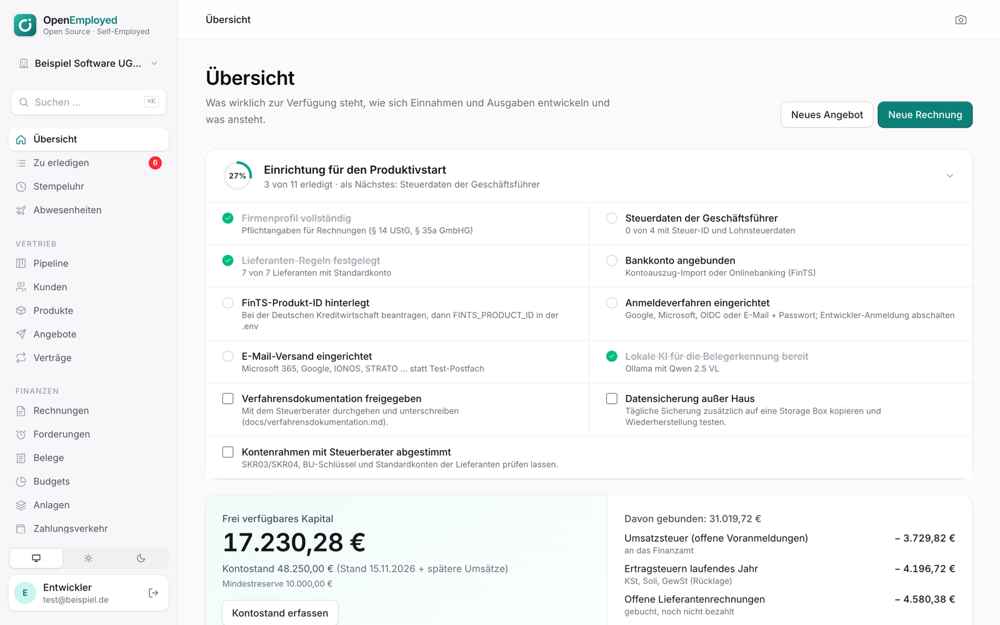

🔒
Deine Daten bleiben bei dir
Läuft komplett auf deinem Server. Sogar die KI-Belegerkennung arbeitet lokal – kein Beleg verlässt das Haus.
Rechnungen, Buchhaltung, Lohn, Personal, Verträge und Steuern für Selbstständige, UG und GmbH – in einem System, GoBD-konform und offen bis zur letzten Zeile.

Buchhaltungs-Abo, Lohnbüro, Signatur-Dienst, Zeiterfassung – und die Daten liegen überall verteilt. In OpenEmployed wird jeder Euro genau einmal erfasst: vom Angebot über Rechnung und Zahlungseingang bis zur Umsatzsteuer-Voranmeldung, zur Gehaltsabrechnung und zum DATEV-Export.
Läuft komplett auf deinem Server. Sogar die KI-Belegerkennung arbeitet lokal – kein Beleg verlässt das Haus.
Lohnsteuer nach dem amtlichen Programmablaufplan 2026, gegen den BMF-Rechner geprüft.
Übersicht in ~4 ms, 500 parallele Anfragen ohne Fehler, Healthchecks und Selbstheilung für jeden Dienst.
Unveränderbares Journal mit Hash-Kette, Audit-Protokoll, Aufbewahrungsfristen und revisionssicherer Spiegelung.
Documenso ist automatisch verbunden. Das System prüft die Formvorschrift und schlägt den richtigen Weg vor.
XRechnung, ZUGFeRD, Peppol, ELSTER, SEPA, DATEV, SKR03/04 und Feiertage aller Bundesländer – komplett auf Deutsch.
Von der ersten Anfrage bis zum Jahresabschluss – ohne Medienbruch.
Pipeline von Lead über Angebot bis Vertrag, Angebote mit Online-Annahme, Abo-Verträge mit automatischer Abrechnung, Kundenportal.
E-Rechnung als XRechnung 3.0 und ZUGFeRD/Factur-X, Versand per E-Mail oder Peppol, Auslandskunden mit Reverse-Charge, Fremdwährungen mit EZB-Kurs, Mahnwesen.
Belegpostfach per IMAP, Handy-Erfassung, Lieferanten-Regeln und lokale KI-Erkennung mit Ollama.
Doppelte Buchführung SKR03/SKR04, Bankimport (CAMT, MT940, CSV, FinTS), Anlagen und AfA, DATEV-Import und -Export, Monats- und Jahresabschluss.
Umsatzsteuer-Voranmeldung mit ELSTER-Versand, Zusammenfassende Meldung, Dauerfristverlängerung, KSt- und GewSt-Vorauszahlungen, BWA mit Vorjahresvergleich.
SEPA-Überweisungen und -Lastschriften mit Mandatsverwaltung.
Stempeluhr, Urlaub und Abwesenheiten, Feiertage im Kalender, Zeitkonto und Überstunden, On- und Offboarding, digitale Personalakte mit Vertragsvorlagen.
Revisionssicher mit Hash-Kette und Aufbewahrungsfristen, Volltextsuche, Spiegelung auf S3 mit Object Lock, WebDAV oder Festplatte, GoBD-Export mit Prüfskript.
Eingebaute Jobs plus eigene Workflows mit Bedingungen, E-Mail, Aufgaben, HTTP und Python in einer Sandbox, REST-API und signierte Webhooks.
Die Lohnsteuer wird nach dem amtlichen Programmablaufplan 2026 berechnet und ist gegen den Rechner des Bundesfinanzministeriums geprüft. Die Entgeltabrechnung enthält alle gesetzlichen Pflichtangaben.
Beispielhafte Darstellung
Gebaut für Daten, bei denen Fehler teuer werden.
Getrennte Datenbankrollen für Migration, Anwendung und Festschreibung. Festgeschriebene Buchungen kann niemand mehr ändern.
Google, Microsoft, OIDC oder E-Mail mit Passwort und Zwei-Faktor-Authentifizierung. Rollen für Geschäftsführung, Buchhaltung, Steuerberatung und Mitarbeiter.
Tägliche, geprüfte Sicherung, Wiederherstellungsskript und Spiegelung auf externe Speicher mit Object Lock.
Du brauchst nur Docker mit Compose, make, openssl und python3.
Ein kleiner Server mit 2–4 GB RAM reicht.
# Herunterladen
git clone https://github.com/schlummer13/openemployed.git
cd openemployed
# Starten – mit Demodaten
make install-lokal
make demoBewährte Bausteine, sauber getrennt.
Nichts. Die Software ist Open Source unter der AGPL-3.0. Kosten entstehen nur für deinen Server.
Für Selbstständige, UG und GmbH in Deutschland, die Rechnungen, Buchhaltung, Lohn und Personal an einem Ort haben und ihre Daten selbst kontrollieren möchten.
Nein. OpenEmployed nimmt viel Arbeit ab und erzeugt DATEV-Exporte für die Kanzlei. Abschlüsse und Meldungen solltest du mit deiner Steuerberatung abstimmen und vor dem Produktivstart einen Monat parallel abrechnen.
Ausschließlich auf deinem eigenen Server. Auch die KI-Belegerkennung läuft lokal; eine Cloud-KI ist optional und muss bewusst eingeschaltet werden.
OpenEmployed ist nach den GoBD gebaut: unveränderbares Journal, Audit-Protokoll, Aufbewahrungsfristen und eine Vorlage für die Verfahrensdokumentation. Die Verfahrensdokumentation musst du für dein Unternehmen freigeben.
Sehr gern. Fehler und Ideen als Issue auf GitHub melden, Änderungen als Pull Request. Sicherheitslücken bitte vertraulich über GitHub melden.
OpenEmployed ist kostenlos, offen und gehört dir.